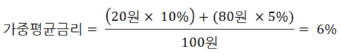

■ 코픽스금리란?
헤어진 옛 연인에게 전화가 왔습니다. 급하게 돈이 필요하다며 100만원만 빌려달라고 합니다. 보험가입 전화면 어쩌나 걱정했는데, 그나마 다행입니다. 하지만 주머니에 돈이 없습니다. 쪽팔려서 돈이 없다고는 못했습니다. ‘알았다’고 말하고 급하게 친구에게 전화를 합니다.
‘야! 야! 급하다. 100만원 빌려주라’
친구가 이자 10만원을 요구합니다. ‘추잡한 새끼’라고 속으로 욕을 하고 돈을 빌렸습니다. 그런데 막상 그 돈을 헤어진 연인에게 부치려니까 갈등이 생깁니다. 그냥 빌려 줄 수는 없습니다. 이자 10만원은 받아야합니다. 그래야 손해가 안 생깁니다
그래서 이자 10만원을 받고 빌려주려고 하는데, 방구 값이 생각납니다. 친구에게 돈일 빌리려고 알방방구를 얼마나 뀌었는데... 방구 값도 받아야합니다.
결국 이자 10만원 + 알랑방구 값 1만원을 합쳐서 1년 뒤에 총 111만원을 받기로 하고 돈을 부쳐 주었습니다.
은행이 우리에게 대출하는 것도 위의 논리가 적용됩니다. 은행이 돈을 구한 금리, 유식하게 말해서 조달금리가 10%라면 10%의 금리 + 약간의 이익을 합쳐서 대출을 해줍니다. 예를 들어 우리가 10%의 금리를 받고 예금을 했다고 합시다. 이 돈을 만약 대출한다면 얼마의 금리를 받고 대출을 해야 할까요? 당연히 ‘10%의 금리 + 약간의 이익’을 합쳐서 대출을 하는 게 정상입니다.
물론 그냥 은행이 꼴리는 대로 이자를 받고 대출을 해 줘도 됩니다. 10%의 금리를 주고 돈을 구했든, 5%의 금리를 주고 돈을 구했든, 은행 꼴리는 대로 이자를 받아도 누가 뭐라 할 수는 없습니다. 하지만 그래도 양심이 있다면 얼마의 비용을 들여서 돈을 구했는지 밝히고, 그기에 약간의 이익을 붙여서 돈을 빌려 주어야 합니다.
과거에 은행이 많이 사용하던 것은 양도성예금증서였습니다. 양도성예금증서를 발행해서 돈을 빌릴 때의 금리가 10%라면 우리한테는 ‘10% + 약간의 이익’을 더해서 돈을 빌려주었습니다.
그런데 여기서 문제가 발생합니다. 은행이 대출을 해주는 돈은 어디서 온 것일까요? 우리가 한 정기예금도 있고, 적금도 있고, 또 양도성예금증서를 발행해서 구한 돈도 있습니다. 실제로 전체 대출금 중에서 양도성예금증서를 발행해서 구한 돈의 비율은 그렇게 크지 않습니다.
따라서 모두가 납득 할만한 조달금리를 계산하기 위해서는 이 모든 돈을 빌릴 때의 금리를 제대로 평균 낼 필요가 있습니다.
그래서 등장한 것이 바로 코픽스(COFIX : Cost of Funds Index) 금리입니다. 코픽스 금리는 은행연합회에서 시중 8개 은행으로부터 자료를 받아서 계산하는데 코픽스 금리의 원리는 간단합니다. 정기예금으로 들어온 돈, 적금으로 들어온 돈, 채권을 발행해서 구한 돈, 양도성예금증서를 발행해서 구한 돈... 이 모든 돈의 금리를 평균 낸 것입니다. 물론 평균은 우리가 기말고사 시험 평균을 내듯이 단순평균을 하는 것이 아니라 가중평균이라는 좀 그럴듯한 방법을 사용합니다.
가중평균이라는 말이 좀 어렵게 들리는데 방법은 간단합니다.
예를 들어 그동안 모은 돈이 총 100원인데, 다음과 같다고 합시다.
정기예금으로 들어온 돈 20원, 금리 10%
채권을 발행해서 들어온 돈 80원, 금리 5%
그러면 가중평균금리는 6%가 됩니다.

가중평균이라고 해서 쫄았는데, 별 것 아니라서 다행입니다.
코픽스금리는 다시 신규취급액기준 코픽스와 잔액기준 코픽스, 단기 코픽스로 나눠집니다. 신규취급액기준은 글자 그대로 매달 새로 구한 돈의 평균 금리를 말하고, 잔액기준은 그동안 대출해주고 남은 돈의 평균금리를 말합니다. 마지막으로 단기코픽스는 주간 단위로 계산한 평균금리를 말합니다.